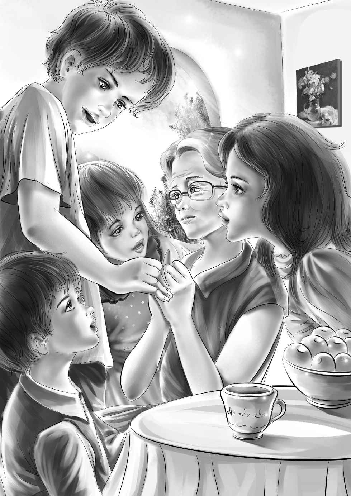

Chapter 16 Aunt Jane’s Surprise
吃晚餐的时候，简姑婆对大家说：“我要宣布一件特别的事。”
她停下来，冲安迪笑一笑，然后继续说道：“安迪和我都不年轻了，但我们还是打算结婚。我们不想再等了！”
杰西和维莉闻言跳了起来，吻了吻可爱的姑婆。亨利抓住她的手，班尼则笑得咧开了嘴。
接着，大家一齐转向安迪。一时间，晚餐好像变成了最精彩的派对。
“从现在开始，”安迪说，“简和我将分享所有的冒险和传奇，我向你们保证！”
班尼说：“安迪叔叔，您想经营这个农场么？”
“别叫我叔叔！还是像开始一样，继续叫我安迪吧！至于农场，我虽然不是一个好农场主，但我可以雇很多人来打理。”
“威威怎么样？”班尼提议，“他是一个好农夫！”
“没错，”安迪说，“他很会种地。”
“可是他话很少，对吧？”班尼问。
“的确，他不喜欢说话。”安迪说。
“所以我们还一直以为他对谜案一无所知！”亨利说。

这时，大家已经吃完了晚餐，正信步走到屋外，坐到院子里。有了安迪的加入，这个大家庭看起来更和乐了，他已经与这个家庭融合在一起了。谁能事先料到，谜案会有一个这么快乐的结局呢？
简姑婆说：“我很开心，小木屋和土豆窖的秘密终于被解开了。”
“我们破解过好多谜团呢！”杰西补充道，“只不过这是头一次我们没靠爷爷的帮助，自己解决的。”
维莉点点头：“但爷爷可以帮我们处理那封古老的信，我猜他可能会把信送到博物馆去。”
班尼说：“我觉得应该把它们捐给一所学校的博物馆，孩子们会很感兴趣的。”
“班尼的主意不错，”亨利赞同道，“我们还可以把寻找这些宝贝的经历讲给他们听——就像讲奇幻故事那样。”
安迪打断了亨利：“小家伙们，如果需要的话，让我也一起去吧！我喜欢给小孩子讲故事。”
“那就更棒啦！”班尼叫道，“对这个故事，你比我可熟悉多了。”
亨利看了看杰西：“我们去拍一些小木屋和土豆窖的照片吧！在地洞里拍照得用闪光灯，杰西，你的约翰·卡特有一部很棒的相机，让他来这儿吧！”
杰西说：“哦，亨利，约翰·卡特就是约翰·卡特，不是我的！”尽管如此，维莉还是发现姐姐的脸红了。
“哈，不管是谁的，叫他来吧！”亨利笑着说，“我知道，他眨眼就会到的。”
“为什么呢？”班尼问。
“自从他用飞机把简姑婆接来后，就一直留在这儿了。他跟我说不想离开，可又不告诉我为什么。”亨利笑着说。
“这个暑假才刚刚开始呢！”班尼说，“接下来咱们还会不会有其他的冒险？”
简姑婆也笑了：“肯定会有的！只要有安迪在，就总会有新奇刺激的事发生。”
安迪说：“没错，简！我保证，你身边一定会趣事不断。”
“咱们的婚礼已经够让我兴奋的了，”简姑婆说，“对了，孩子们，尽快把你们的爷爷接来吧！或许可以让卡特先生开车去接他。”
大家都听到了简姑婆的话，可是没有人知道剩下的暑假会发生什么事。简姑婆不知道，安迪不知道，亨利、爷爷和班尼不知道，甚至连曾经在联邦调查局工作过的约翰·卡特也不知道。